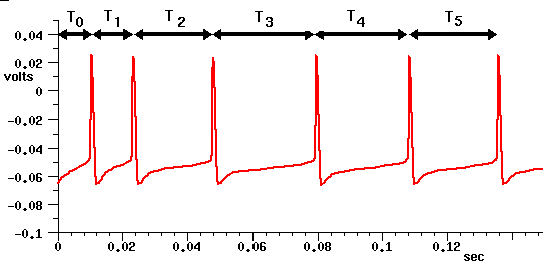

Back to Building a cell the easy way
Back to Creating large networks with GENESIS
Up: Table of Contents
Jim Bower has discussed the value of structurally realistic modeling in his introductory remarks on WAM-BAMM and the modeling philosophy behind the GENESIS approach to modeling (Bower 2005). You can also read his thoughts on choosing the level of detail to use in modeling in BoG Chapter 11.
The simple cell model that we have been using so far, described in Building a cell the easy way, fires at a steady rate, with equal intervals between spikes. With the addition of a non-inactivating muscarinic potassium current, it was possible to produce a non-uniform firing pattern with spike frequency adaptation. The RScell simulation in the cells/RScell directory is another simple one-compartment model that has a somewhat more realistic firing pattern. (See the README file for the RScell model for more details.)
We might ask, how important is it to accurately reproduce the firing pattern of a typical pyramidal cell when picking a cell model to use in a cortical network? What is the effect of the spike latency and initial interspike interval (ISI) vs. the final ISI in determining the behavior of a network of neurons that display spike frequency adaptation? Is the RScell model good enough to use in a realistic network model?
Current clamp experiments on neocortical pyramidal cells often show results similar to the simulation results below (generated from the detailed BDK5cell simulation in the cells/corticalcells directory). Is it necessary that a model neuron used in a large network accurately fit the timing of these action potentials? Or will the large variation in properties of individual neurons somehow "wash out" these details in the network, and allow us to use much simpler models? This is still an open question that may be answered by further modeling studies. However, there are indications that this variable spike timing can significantly affect network behavior.

Here T0 is the spike latency, or time between the application of the injection pulse and the first spike. Under conditions of low excitation, this could act as an additional propagation delay, and affect the behavior of the network. The increasing interspike intervals T1 - T5 can also affect the behavior of the network. Under conditions of high excitation, when the neuron is firing nearly continously, the later intervals will be more relevant than the early ones.
Spike frequency adaption may also be used as a mechanism for processing behaviorally relevant stimuli in the presence of many other sources of synaptic input. For example , Benda et al. (2005) have presented evidence that spike frequency adaption is used as a high pass filter to separate transient signals from slower oscillatory signals in the electrosensory system of weakly electric fish.
The electronically published version of the WAM-BAMM 2005 Advanced Tutorial on Realistic Single Cell Modeling (Jaeger, 2005) may be viewed or downloaded at http://www.brains-minds-media.org/archive/222. It presents a detailed account of the process of using experimental data to create a realistic single neuron model.
To briefly summarize, the process consists of three main steps:
Benda J, Longtin A, Maler L. (2005) Spike-frequency adaptation separates transient communication signals from background oscillations, J. Neurosci. 25: 2312-2321.
Bower, JM (2005) Looking for Newton: Realistic modeling in modern biology Brains, Minds and Media 1:bmm217 (http://www.brains-minds-media.org/)
Holmes WR, Ambros-Ingerson J, Grover LM (2006) Fitting experimental data to models that use morphological data from public databases. J. Comput. Neurosci.20; 349-365.
Jaeger D (2005) Realistic single cell modeling - From experiment to simulation. Brains, Minds, and Media. 1: bmm222 (http://www.brains-minds-media.org/)